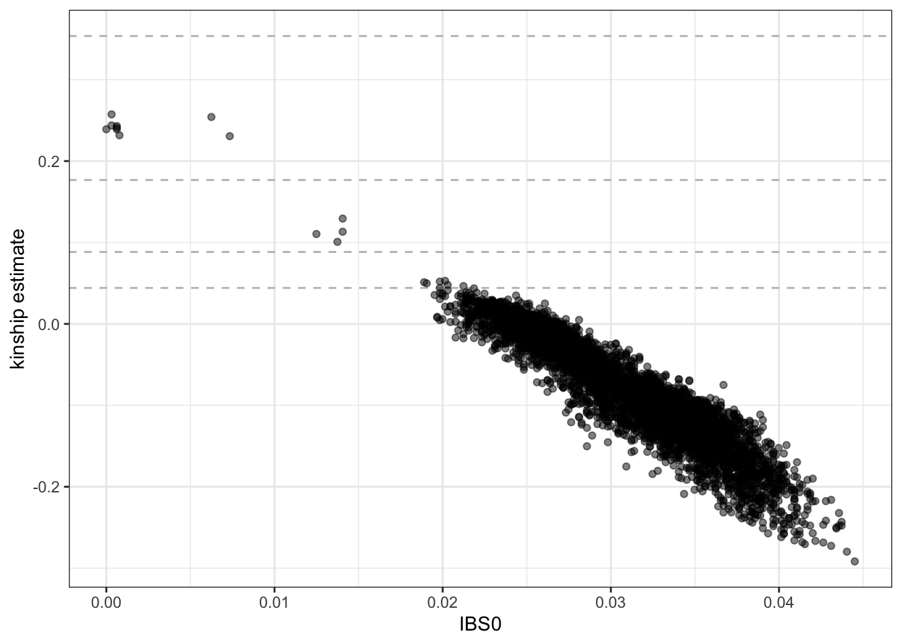
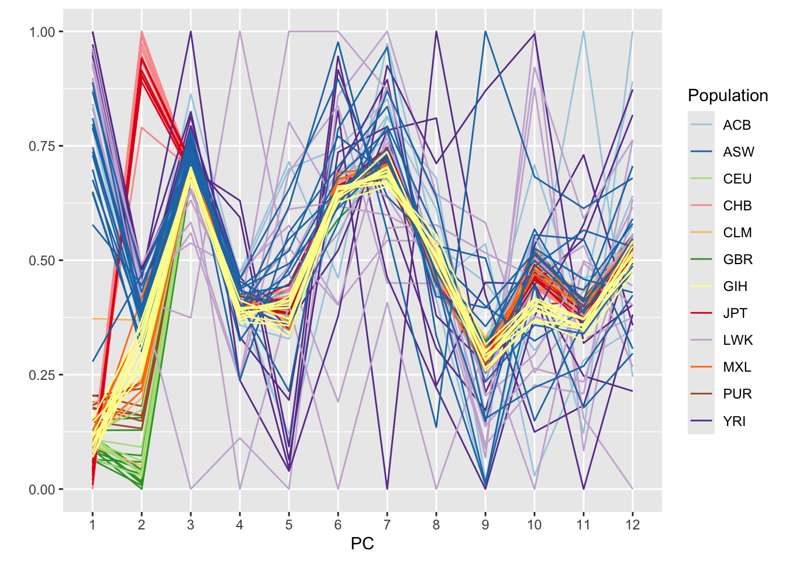
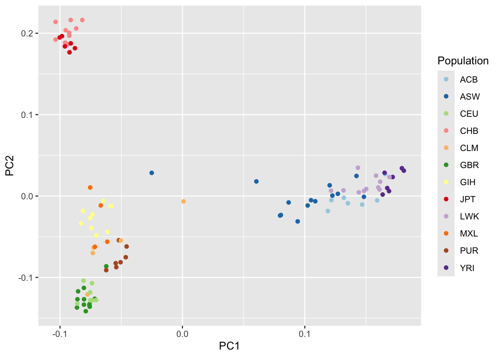
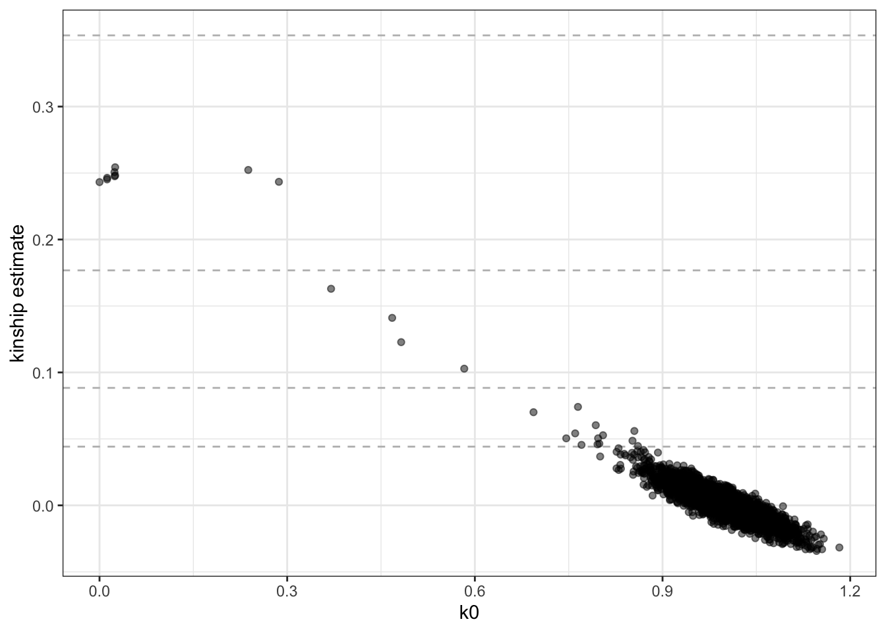
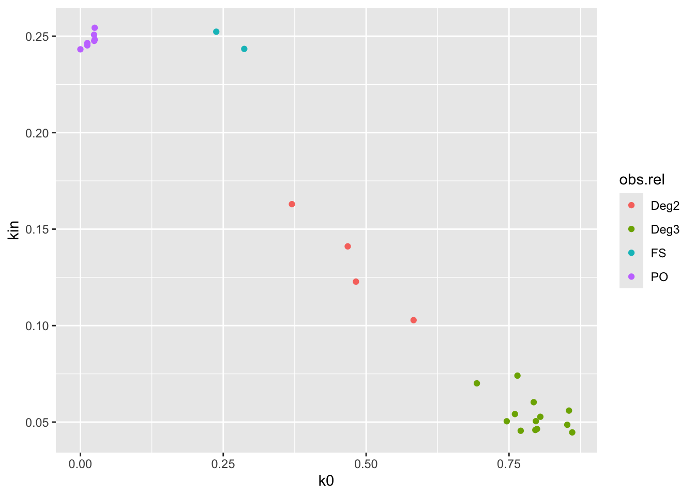

4 Population structure and relatedness
Population structure due to genetic ancestry and genetic correlation due to sample relatedness are important factors to consider when performing association tests as their presence can lead to mis-calibration of test statistics and false positive associations. This tutorial demonstrates how to perform population structure and relatedness inference using the GENESIS and SNPRelate R/Bioconductor packages. We use the results of this inference to perform association tests in the mixed model tutorial.
4.1 Computing a GRM
We can use the SNPRelate package to compute a Genetic Relationship matrix (GRM) using GDS files. A GRM captures genetic correlation among samples due to both distant ancestry (i.e. population structure) and recent kinship (i.e. familial relatedness) in a single matrix.
SNPRelate offers several algorithms for computing a GRM, including the commonly-used GCTA Yang et al 2011 (method = "GCTA") and allelic matching based estimators described by Weir and Goudet 2017 (method = "IndivBeta").
## Loading required package: gdsfmtrepo_path <- "https://github.com/smgogarten/GENESIS_workshop_2026/raw/main"
if (!dir.exists("data")) dir.create("data")
gdsfile <- "data/1KG_phase3_subset_chr1.gds"
if (!file.exists(gdsfile)) download.file(file.path(repo_path, gdsfile), gdsfile)
gdsfmt::showfile.gds(closeall=TRUE) # make sure file is not already open
gds <- seqOpen(gdsfile)
library(SNPRelate)
grm <- snpgdsGRM(gds, method="GCTA")## Genetic Relationship Matrix (GRM, GCTA):
## Calculating allele counts/frequencies (1120 variants) ...
## [..................................................] 0%, ETC: --- (1/1) [==================================================] 100%, used 0s (1/1) [==================================================] 100%, complete, 0s
## # of selected variants: 1,107
## Excluding 13 SNVs (monomorphic: TRUE, MAF: NaN, missing rate: 0.01)
## # of samples: 1,126
## # of SNVs: 1,107
## using 1 thread/core
## CPU capabilities:
## 2026-07-03 19:40:06 (internal increment: 668)
## [..................................................] 0%, ETC: --- [==================================================] 100%, completed, 0s
## 2026-07-03 19:40:06 Done.## [1] "sample.id" "snp.id" "method" "grm"## [1] 1126 1126## [,1] [,2] [,3] [,4] [,5]
## [1,] 2.24542126 0.02407128 0.02166515 0.02811221 0.01037635
## [2,] 0.02407128 1.72181561 0.02471537 0.03011554 -0.01032435
## [3,] 0.02166515 0.02471537 0.31482882 0.01837674 0.04781789
## [4,] 0.02811221 0.03011554 0.01837674 0.19735556 0.07583944
## [5,] 0.01037635 -0.01032435 0.04781789 0.07583944 0.245130444.2 PC-Relate
To disentangle distant ancestry (i.e. population structure) from recent kinship (i.e. familial relatedness), we implement the analysis described in Conomos et al., 2016. This approach uses the KING-robust, PC-AiR, and PC-Relate methods.
4.2.1 LD-pruning
We generally advise that population structure and relatedness inference be performed using a set of (nearly) independent genetic variants. To find this set of variants, we perform linkage-disequilibrium (LD) pruning on the study sample set. We typically use an LD threshold of r^2 < 0.1 to select variants. We use the SNPRelate package to perform LD-pruning with GDS files.
# use a GDS file with all chromosomes
library(SeqArray)
gdsfile <- "data/1KG_phase3_subset.gds"
if (!file.exists(gdsfile)) download.file(file.path(repo_path, gdsfile), gdsfile)
gdsfmt::showfile.gds(closeall=TRUE) # make sure file is not already open
gds <- seqOpen(gdsfile)
# use a subset of 100 samples to make things run faster
sampfile <- "data/samples_subset100.RData"
if (!file.exists(sampfile)) download.file(file.path(repo_path, sampfile), sampfile)
sample.id <- get(load(sampfile))
# LD pruning to get variant set
library(SNPRelate)
set.seed(100) # LD pruning has a random element; so make this reproducible
snpset <- snpgdsLDpruning(gds, sample.id=sample.id, method="corr",
slide.max.bp=10e6, ld.threshold=sqrt(0.1))## SNV pruning based on LD:
## Excluding 1,120 SNVs on non-autosomes
## Calculating allele counts/frequencies (24640 variants) ...
## [..................................................] 0%, ETC: --- (1/1) [==================================================] 100%, used 0s (1/1) [==================================================] 100%, complete, 0s
## # of selected variants: 10,967
## Excluding 13,673 SNVs (monomorphic: TRUE, MAF: 0.005, missing rate: 0.01)
## # of samples: 100
## # of SNVs: 10,967
## using 1 thread/core
## sliding window: 10,000,000 basepairs, Inf SNPs
## |LD| threshold: 0.316228
## method: correlation
## Chrom 1: |====================|====================|
## 31.34%, 351 / 1,120 (Fri Jul 3 19:40:06 2026)
## Chrom 2: |====================|====================|
## 31.25%, 350 / 1,120 (Fri Jul 3 19:40:06 2026)
## Chrom 3: |====================|====================|
## 30.45%, 341 / 1,120 (Fri Jul 3 19:40:06 2026)
## Chrom 4: |====================|====================|
## 31.25%, 350 / 1,120 (Fri Jul 3 19:40:06 2026)
## Chrom 5: |====================|====================|
## 29.55%, 331 / 1,120 (Fri Jul 3 19:40:06 2026)
## Chrom 6: |====================|====================|
## 31.25%, 350 / 1,120 (Fri Jul 3 19:40:06 2026)
## Chrom 7: |====================|====================|
## 28.66%, 321 / 1,120 (Fri Jul 3 19:40:06 2026)
## Chrom 8: |====================|====================|
## 26.16%, 293 / 1,120 (Fri Jul 3 19:40:06 2026)
## Chrom 9: |====================|====================|
## 28.57%, 320 / 1,120 (Fri Jul 3 19:40:06 2026)
## Chrom 10: |====================|====================|
## 28.66%, 321 / 1,120 (Fri Jul 3 19:40:06 2026)
## Chrom 11: |====================|====================|
## 26.88%, 301 / 1,120 (Fri Jul 3 19:40:06 2026)
## Chrom 12: |====================|====================|
## 28.84%, 323 / 1,120 (Fri Jul 3 19:40:07 2026)
## Chrom 13: |====================|====================|
## 25.18%, 282 / 1,120 (Fri Jul 3 19:40:07 2026)
## Chrom 14: |====================|====================|
## 24.73%, 277 / 1,120 (Fri Jul 3 19:40:07 2026)
## Chrom 15: |====================|====================|
## 22.86%, 256 / 1,120 (Fri Jul 3 19:40:07 2026)
## Chrom 16: |====================|====================|
## 22.68%, 254 / 1,120 (Fri Jul 3 19:40:07 2026)
## Chrom 17: |====================|====================|
## 21.61%, 242 / 1,120 (Fri Jul 3 19:40:07 2026)
## Chrom 18: |====================|====================|
## 23.21%, 260 / 1,120 (Fri Jul 3 19:40:07 2026)
## Chrom 19: |====================|====================|
## 21.61%, 242 / 1,120 (Fri Jul 3 19:40:07 2026)
## Chrom 20: |====================|====================|
## 20.89%, 234 / 1,120 (Fri Jul 3 19:40:07 2026)
## Chrom 21: |====================|====================|
## 18.93%, 212 / 1,120 (Fri Jul 3 19:40:07 2026)
## Chrom 22: |====================|====================|
## 17.23%, 193 / 1,120 (Fri Jul 3 19:40:07 2026)
## 6,404 markers are selected in total.## chr1 chr2 chr3 chr4 chr5 chr6 chr7 chr8 chr9 chr10 chr11 chr12 chr13
## 351 350 341 350 331 350 321 293 320 321 301 323 282
## chr14 chr15 chr16 chr17 chr18 chr19 chr20 chr21 chr22
## 277 256 254 242 260 242 234 212 1934.2.2 KING-robust
Step 1 is to get initial kinship estimates using KING-robust, which is robust to discrete population structure but not ancestry admixture. KING-robust will be able to identify close relatives (e.g. 1st and 2nd degree) reliably, but may identify spurious pairs or miss more distant pairs of relatives in the presence of admixture. KING is available as its own software, but the KING-robust algorithm is also available in SNPRelate via the function snpgdsIBDKING.
## IBD analysis (KING method of moment) on genotypes:
## Calculating allele counts/frequencies (6404 variants) ...
## [..................................................] 0%, ETC: --- (1/1) [==================================================] 100%, used 0s (1/1) [==================================================] 100%, complete, 0s
## # of selected variants: 6,404
## # of samples: 100
## # of SNVs: 6,404
## using 1 thread/core
## No family is specified, and all individuals are treated as singletons.
## Relationship inference in the presence of population stratification.
## CPU capabilities:
## 2026-07-03 19:40:07 (internal increment: 65536)
## [..................................................] 0%, ETC: --- [==================================================] 100%, completed, 0s
## 2026-07-03 19:40:07 Done.## [1] "sample.id" "snp.id" "afreq" "IBS0" "kinship"# extract the kinship estimates
kingMat <- king$kinship
colnames(kingMat) <- rownames(kingMat) <- king$sample.id
dim(kingMat)## [1] 100 100## HG00110 HG00116 HG00120 HG00128 HG00136
## HG00110 0.50000000 -0.01556777 -0.034798535 -0.015262515 -0.050671551
## HG00116 -0.01556777 0.50000000 0.100763807 0.014173703 -0.025571600
## HG00120 -0.03479853 0.10076381 0.500000000 0.002412545 -0.027677497
## HG00128 -0.01526252 0.01417370 0.002412545 0.500000000 -0.001809409
## HG00136 -0.05067155 -0.02557160 -0.027677497 -0.001809409 0.500000000We extract pairwise kinship estimates and IBS0 values (the proportion of variants for which the pair of indivdiuals share 0 alleles identical by state) to plot.
## ID1 ID2 IBS0 kinship
## 1 HG00110 HG00116 0.02545284 -0.01556777
## 2 HG00110 HG00120 0.02717052 -0.03479853
## 3 HG00110 HG00128 0.02435978 -0.01526252
## 4 HG00110 HG00136 0.02951280 -0.05067155
## 5 HG00110 HG00137 0.02779513 -0.05006105
## 6 HG00110 HG00141 0.02841974 -0.05006105library(ggplot2)
ggplot(kinship, aes(IBS0, kinship)) +
geom_hline(yintercept=2^(-seq(3,9,2)/2), linetype="dashed", color="grey") +
geom_point(alpha=0.5) +
ylab("kinship estimate") +
theme_bw()
We see a few parent-offspring, full sibling, 2nd degree, and 3rd degree relative pairs. The abundance of negative estimates represent pairs of individuals who have ancestry from different populations – the magnitude of the negative relationship is informative of how different their ancestries are; more on this below.
4.2.3 PC-AiR
The next step is PC-AiR, which provides robust population structure inference in samples with kinship and pedigree structure. PC-AiR is available in the GENESIS package via the function pcair. The steps in pcair can also be performed individually, which is illustrated below.
First, PC-AiR partitions the full sample set into a set of mutually unrelated samples that is maximally informative about all ancestries in the sample (i.e. the unrelated set) and their relatives (i.e. the related set). We use a 3rd degree kinship threshold (kin.thresh = 2^(-9/2)), which corresponds to first cousins – this defines anyone less related than first cousins as “unrelated”. We use the negative KING-robust estimates as “ancestry divergence” measures (divMat) to identify pairs of samples with different ancestry – we preferentially select individuals with many negative estimates for the unrelated set to ensure ancestry representation. For now, we also use the KING-robust estimates as our kinship measures (kinMat); more on this below.
Once the unrelated and related sets are identified, PC-AiR performs a standard Principal Component Analysis (PCA) on the unrelated set of individuals and then projects the relatives onto the PCs. Under the hood, PC-AiR uses the SNPRelate package for efficient PC computation and projection.
library(GENESIS)
sampset <- pcairPartition(kinobj=kingMat, kin.thresh=2^(-9/2),
divobj=kingMat, div.thresh=-2^(-9/2))## Using kinobj and divobj to partition samples into unrelated and related sets## Working with 100 samples## Identifying relatives for each sample using kinship threshold 0.0441941738241592## Identifying pairs of divergent samples using divergence threshold -0.0441941738241592## Partitioning samples into unrelated and related sets...## [1] "rels" "unrels"## rels unrels
## 15 85Using the SNPRelate package, we run PCA on the unrelated set and project values for the related set. We use the same LD pruned set of variants again.
## Principal Component Analysis (PCA) on genotypes:
## Calculating allele counts/frequencies (6404 variants) ...
## [..................................................] 0%, ETC: --- (1/1) [==================================================] 100%, used 0s (1/1) [==================================================] 100%, complete, 0s
## # of selected variants: 6,170
## Excluding 234 SNVs (monomorphic: TRUE, MAF: NaN, missing rate: 0.01)
## # of samples: 85
## # of SNVs: 6,170
## using 1 thread/core
## # of principal components: 32
## CPU capabilities:
## 2026-07-03 19:40:08 (internal increment: 8864)
## [..................................................] 0%, ETC: --- [==================================================] 100%, completed, 0s
## 2026-07-03 19:40:08 Begin (eigenvalues and eigenvectors)
## 2026-07-03 19:40:08 Done.## SNP Loading:
## # of samples: 85
## # of SNPs: 6,170
## using 1 thread/core
## using the top 32 eigenvectors
## 2026-07-03 19:40:08 (internal increment: 65536)
## [..................................................] 0%, ETC: --- [==================================================] 100%, completed, 0s
## 2026-07-03 19:40:08 Done.## Sample Loading:
## # of samples: 15
## # of SNPs: 6,170
## using 1 thread/core
## using the top 32 eigenvectors
## 2026-07-03 19:40:08 (internal increment: 65536)
## [..................................................] 0%, ETC: --- [==================================================] 100%, completed, 0s
## 2026-07-03 19:40:08 Done.# combine unrelated and related PCs and order as in GDS file
pcs <- rbind(pca.unrel$eigenvect, samp.load$eigenvect)
rownames(pcs) <- c(pca.unrel$sample.id, samp.load$sample.id)
samp.ord <- match(sample.id, rownames(pcs))
pcs <- pcs[samp.ord,]We need to determine which PCs are ancestry informative. To do this we need population information for the 1000 Genomes samples. This information is stored in an AnnotatedDataFrame, which is a data.frame with optional metadata describing the columns. The class is defined in the Biobase package. We load the stored object.
## Loading required package: BiocGenerics## Loading required package: generics##
## Attaching package: 'generics'## The following objects are masked from 'package:base':
##
## as.difftime, as.factor, as.ordered, intersect, is.element, setdiff,
## setequal, union##
## Attaching package: 'BiocGenerics'## The following objects are masked from 'package:stats':
##
## IQR, mad, sd, var, xtabs## The following objects are masked from 'package:base':
##
## anyDuplicated, aperm, append, as.data.frame, basename, cbind,
## colnames, dirname, do.call, duplicated, eval, evalq, Filter, Find,
## get, grep, grepl, is.unsorted, lapply, Map, mapply, match, mget,
## order, paste, pmax, pmax.int, pmin, pmin.int, Position, rank,
## rbind, Reduce, rownames, sapply, saveRDS, table, tapply, unique,
## unsplit, which.max, which.min## Welcome to Bioconductor
##
## Vignettes contain introductory material; view with
## 'browseVignettes()'. To cite Bioconductor, see
## 'citation("Biobase")', and for packages 'citation("pkgname")'.sampfile <- "data/sample_annotation.RData"
if (!file.exists(sampfile)) download.file(file.path(repo_path, sampfile), sampfile)
annot <- get(load(sampfile))
annot## An object of class 'AnnotatedDataFrame'
## rowNames: 1 2 ... 2504 (1126 total)
## varLabels: sample.id subject.id ... status (6 total)
## varMetadata: labelDescription## sample.id subject.id Population Population.Description sex status
## 1 HG00096 HG00096 GBR British in England and Scotland M 0
## 2 HG00097 HG00097 GBR British in England and Scotland F 1
## 3 HG00099 HG00099 GBR British in England and Scotland F 0
## 4 HG00100 HG00100 GBR British in England and Scotland F 1
## 5 HG00101 HG00101 GBR British in England and Scotland M 0
## 6 HG00102 HG00102 GBR British in England and Scotland F 0## labelDescription
## sample.id sample identifier
## subject.id subject identifier
## Population population abbreviation
## Population.Description population description
## sex sex
## status simulated case/control statusWe make a parallel coordinates plot, color-coding by 1000 Genomes population. We load the dplyr package for data.frame manipulation.
pc.df <- as.data.frame(pcs)
names(pc.df) <- 1:ncol(pcs)
pc.df$sample.id <- row.names(pcs)
library(dplyr)##
## Attaching package: 'dplyr'## The following object is masked from 'package:Biobase':
##
## combine## The following objects are masked from 'package:BiocGenerics':
##
## combine, intersect, setdiff, setequal, union## The following object is masked from 'package:generics':
##
## explain## The following objects are masked from 'package:stats':
##
## filter, lag## The following objects are masked from 'package:base':
##
## intersect, setdiff, setequal, unionannot <- pData(annot) %>%
dplyr::select(sample.id, Population)
pc.df <- left_join(pc.df, annot, by="sample.id")
library(GGally)
library(RColorBrewer)
pop.cols <- setNames(brewer.pal(12, "Paired"),
c("ACB", "ASW", "CEU", "GBR", "CHB", "JPT", "CLM", "MXL", "LWK", "YRI", "GIH", "PUR"))
ggparcoord(pc.df, columns=1:12, groupColumn="Population", scale="uniminmax") +
scale_color_manual(values=pop.cols) +
xlab("PC") + ylab("")
4.2.4 PC-Relate
The first 2 PCs separate populations, so we use them to compute kinship estimates adjusting for ancestry. The PC-Relate function expects a SeqVarIterator object.
seqResetFilter(gds, verbose=FALSE)
library(SeqVarTools)
seqData <- SeqVarData(gds)
seqSetFilter(seqData, variant.id=pruned)## # of selected variants: 6,404iterator <- SeqVarBlockIterator(seqData, verbose=FALSE)
pcrel <- pcrelate(iterator, pcs=pcs[,1:2], training.set=sampset$unrels,
sample.include=sample.id)## Using 8 CPU cores## 100 samples to be included in the analysis...## Betas for 2 PC(s) will be calculated using 85 samples in training.set...## Running PC-Relate analysis for 100 samples using 6404 SNPs in 1 blocks...## Performing Small Sample Correction...## [1] "kinBtwn" "kinSelf"PC-Relate is an iterative method. Now that we have ancestry-adjusted kinship estimates, we can use them to better adjust for ancestry in the PCs. This time we use the pcair function, which combines partitioning the sample set and running PCA in one step. First we need to make a kinship matrix from the PC-Relate results. The KING matrix is still used for ancestry divergence.
pcrelMat <- pcrelateToMatrix(pcrel, scaleKin=1, verbose=FALSE)
seqResetFilter(seqData, verbose=FALSE)
pca <- pcair(seqData,
kinobj=pcrelMat, kin.thresh=2^(-9/2),
divobj=kingMat, div.thresh=-2^(-9/2),
sample.include=sample.id, snp.include=pruned,
verbose=FALSE)
names(pca)## [1] "vectors" "values" "rels" "unrels" "kin.thresh"
## [6] "div.thresh" "sample.id" "nsamp" "nsnps" "varprop"
## [11] "call" "method"pcs <- pca$vectors
pc.df <- as.data.frame(pcs)
names(pc.df) <- paste0("PC", 1:ncol(pcs))
pc.df$sample.id <- row.names(pcs)
pc.df <- left_join(pc.df, annot, by="sample.id")
ggplot(pc.df, aes(PC1, PC2, color=Population)) + geom_point() +
scale_color_manual(values=pop.cols)
Now we use the revised PCs to compute new kinship estimates. One can run the iteration multiple times and check for conversion, but usually two rounds are sufficient.
## # of selected variants: 6,404iterator <- SeqVarBlockIterator(seqData, verbose=FALSE)
pcrel <- pcrelate(iterator, pcs=pcs[,1:2], training.set=pca$unrels,
sample.include=sample.id)## Using 8 CPU cores## 100 samples to be included in the analysis...## Betas for 2 PC(s) will be calculated using 86 samples in training.set...## Running PC-Relate analysis for 100 samples using 6404 SNPs in 1 blocks...## Performing Small Sample Correction...We plot the kinship estimates from PC-Relate, and notice that the values for less related pairs are much better behaved.
kinship <- pcrel$kinBtwn
ggplot(kinship, aes(k0, kin)) +
geom_hline(yintercept=2^(-seq(3,9,2)/2), linetype="dashed", color="grey") +
geom_point(alpha=0.5) +
ylab("kinship estimate") +
theme_bw()
4.2.5 Comparison with pedigree
We can detect pedigree errors and sample identity problems by comparing the pedigree with empirical kinship estimates. We use a function from the GWASTools package, pedigreePairwiseRelatedness, to get expected pairwise relationships based on the pedigree.
pedfile <- "data/pedigree.rds"
if (!file.exists(pedfile)) download.file(file.path(repo_path, pedfile), pedfile)
ped <- readRDS(pedfile)
head(ped)## family individ father mother sex
## 1 BB01 HG01879 0 0 M
## 2 BB01 HG01880 0 0 F
## 3 BB01 HG01881 HG01879 HG01880 F
## 4 BB02 HG01882 0 0 M
## 5 BB02 HG01883 0 0 F
## 6 BB02 HG01888 HG01882 HG01883 M## [1] "inbred.fam" "inbred.KC" "relativeprs"## Individ1 Individ2 relation kinship family
## 1 HG01879 HG01880 U 0.00 BB01
## 2 HG01879 HG01881 PO 0.25 BB01
## 3 HG01880 HG01881 PO 0.25 BB01
## 4 HG01882 HG01883 U 0.00 BB02
## 5 HG01882 HG01888 PO 0.25 BB02
## 6 HG01883 HG01888 PO 0.25 BB02##
## Av FS GpGc HAv HS PO U
## 2 6 16 1 3 616 330## relation kinship
## 1 PO 0.2500
## 2 FS 0.2500
## 3 HS 0.1250
## 4 GpGc 0.1250
## 5 Av 0.1250
## 6 HAv 0.0625
## 7 U 0.0000## assign degrees to expected relationship pairs
rel <- rel %>%
mutate(exp.rel=ifelse(kinship == 0.125, "Deg2", ifelse(kinship == 0.0625, "Deg3", relation)),
pair=GWASTools::pasteSorted(Individ1, Individ2)) %>%
select(pair, family, relation, exp.rel)
## assign degrees to observed relationship pairs
cut.dup <- 1/(2^(3/2))
cut.deg1 <- 1/(2^(5/2))
cut.deg2 <- 1/(2^(7/2))
cut.deg3 <- 1/(2^(9/2))
cut.k0 <- 0.1
kinship <- kinship %>%
mutate(obs.rel=ifelse(kin > cut.dup, "Dup",
ifelse(kin > cut.deg1 & k0 < cut.k0, "PO",
ifelse(kin > cut.deg1, "FS",
ifelse(kin > cut.deg2, "Deg2",
ifelse(kin > cut.deg3, "Deg3", "U"))))))
table(kinship$obs.rel)##
## Deg2 Deg3 FS PO U
## 4 13 2 7 4924# merge observed and expected relationships
kin.obs <- kinship %>%
select(ID1, ID2, kin, k0, obs.rel) %>%
mutate(pair=GWASTools::pasteSorted(ID1, ID2)) %>%
left_join(rel, by="pair") %>%
select(-pair) %>%
mutate(exp.rel=ifelse(is.na(exp.rel), "U", exp.rel)) %>%
filter(!(exp.rel == "U" & obs.rel == "U"))
table(kin.obs$exp.rel, kin.obs$obs.rel)##
## Deg2 Deg3 FS PO
## U 4 13 2 7
All the observed relationships were unexpected. These samples are from 1000 Genomes sequencing, and known relatives were excluded from the released data. Here we have detected some cryptic relatives that were not annotated in the pedigree.
4.2.6 Advanced Notes
In large samples (tens of thousands or more), the KING-robust and PC-Relate analyses can be very time consuming, so we suggest the following alternative procedure for deconvoluting ancestry and relatedness:
- Use the KING-IBDseg method to estimate kinship for all pairs of individuals. This method uses a fast algorithm to approximate IBD segments based on identity by state and works well in the presence of ancestry admixture – in our experience, it gives very similar results to PC-Relate. The software to run KING-IBDseg uses PLINK files.
- Perform a PC-AiR analysis to infer population structure using the KING-IBDseg estimates as the kinship estimates and using no ancestry divergence measures (in large samples, the PC-AiR algorithm works well even without the ancestry divergence).